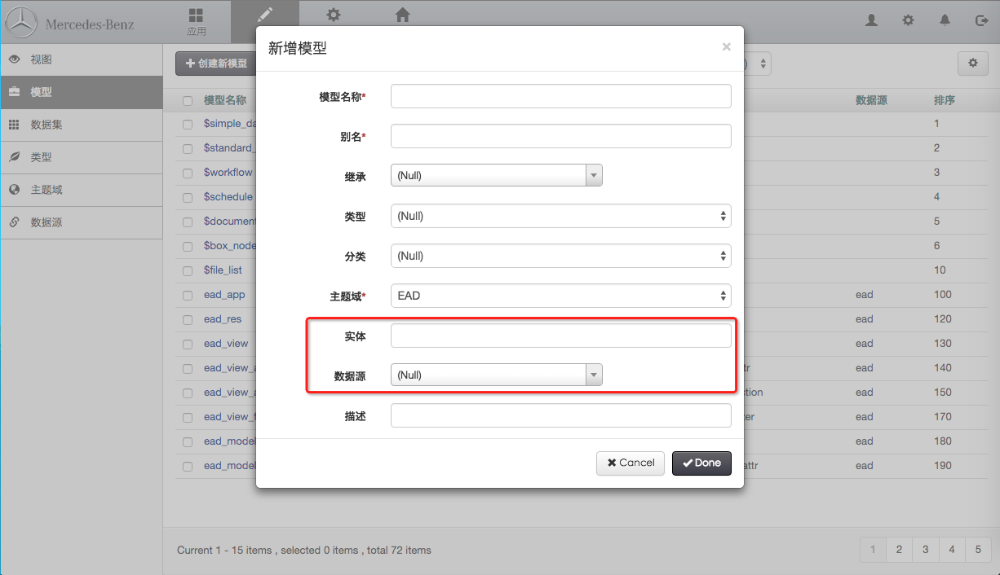

创建模型
菜单路径：开发 > 模型

点击 “创建新模型” 动作按钮开始创建新模型，或者选定已经存在的模型点击 “修改、删除、复制” 动作按钮修改模型定义,并且可以进行“创建实体、自动配置”等操作。

- 模型名称：所要创建模型名称（一般类似于数据库表名）
- 别名：模型的中文名称或英文名称（一般用于页面展示名称一致）
- 继承：继承其他模型及其模型属性
注意：特定的模型应该必须集成已有的基础模型，如工作流模型，需集成 $workflow，
- 类型：模型类型
- 虚拟（无实际的表与其对应）
- 存在（有实际的表与其对应）
- 分类：对模型进行分类
- 模板，用于其他模型继承模型的设置，该类模型不用于创建视图、数据集；
- 平台，是指 EAD 平台自身所用到的模型；
- 系统，是指系统管理，如用户、组织机构等用到的模型，平台自带通用的系统管理相关的功能；
- 用户，是指用EAD平台开发应用时，用户自己开发的模型；
- 主题域：一般用于模型分组
- 实体：模型所对应的实际的数据载体，在关系型数据库中就是所对应的表名
- 数据源：实体所在的数据源
- 模式：对应模型操作时，对实体的操作权限
- safe：安全模式，该模式下，不会对实体有任何操作。
- alter：更新模式，该模式下，修改模型属性时，会更新实体，并且，如果数据库中实体不存在时，自动配置、创建实体都会进行创建。
- drop：重建模式，该模式下，修改模型属性同更新模式，自动配置、创建实体时，若表存在，则先删除实体，后创建实体。
注意：模型默认的模式在系统变量中进行设置，变量名称为：model-mode，变量默认设置为：alter。若模型中没有设置模式，则以系统的全局设置为准，若模型设置模式，则以模型设置的模式为准。
点击创建实体：在对应的数据源下创建表。
注意：创建时，参照模型所配置模式。
点击自动配置：在对应的数据源下创建数据表，视图，视图属性，资源
注意：自动配置后的资源会默认在开发者中心应用下，需要进行移动，移动时，只需要要移动视图资源，其他资源则会跟着改变。
导入模型：
- 第一步：首先点击下载模板，下载用于模型设计的Excel模板；
第二步：下载模板后，在模板的基础上进行模型设计；
注意：模型设计时，可按照Sheet也进行多个模型的设置，导入时以Sheet的名称为准；
第三步：在模型中建立所有Sheet中要导入的模型；
- 第四步：点击导入，选择设计完成的excel，进行模型导入；